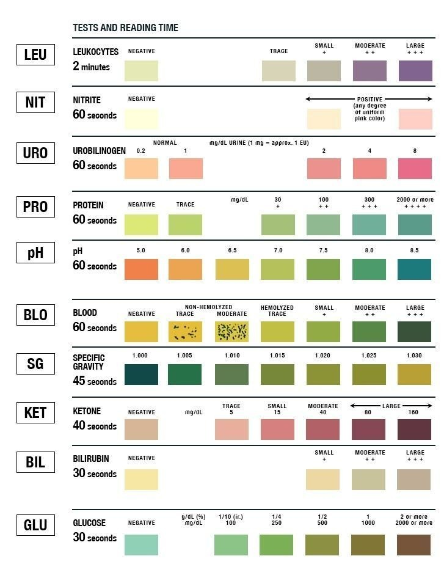

Urine Test Strip - Image Map
Click a coloured pad below to learn what that test commonly detects.

Interactive Pad Legend
Glucose
Protein
Blood
Ketones
pH
Select a pad
The selected pad's information will appear here.
This is an educational demonstration, not a diagnostic tool. A real strip must be read according to its manufacturer's instructions and timing.